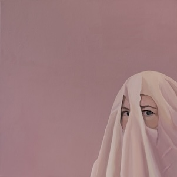
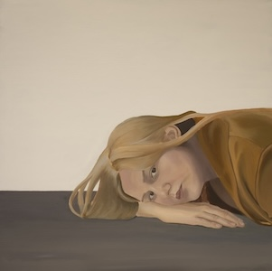
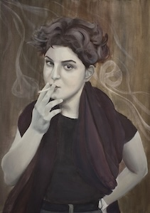
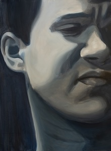
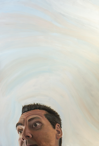
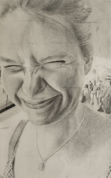
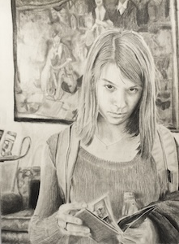

This page is still a work-in-progress. I'm working on uploading higher-quality images of each work and adding more information on these paintings, especially the size of each canvas.
While most works in this series were completed between 2019 and 2021, my first drawing was completed in the winter of 2017-2018. Works are shown in reverse-chronological order of completion. All paintings are acrylic, and all drawings are simply pencil on paper.
This series explores candid portraiture. It initially seeks to recreate conventional 'candid portraits', i.e. portraits where the subject is unaware that they are being captured. It later questions whether a portrait might still be candid if the subject is aware of the artist/viewer yet still presents themselves authentically, and whether candid portraits can capture subjects who do not wish to be perceived.
Because the series delves more and more into how subjects behave when they are aware of a viewer, it raises some interesting ideas about vulnerability. A few types of vulnerability are displayed over the course of the series. Subjects who are not aware that they are being perceived are vulnerable because their true, non-performative selves are on display without their consent. Subjects who knowingly display their authentic selves are willingly opening themselves up for perception by (and therefore judgement from) others. Even hiding from a camera can be vulnerable because taking steps to shield yourself from a viewer reveals your fear of being perceived or captured.
The process itself showed how and if people were willing to be vulnerable for the sake of the series. Initially, I used images of candid portraits which I had taken before beginning the series. Later, I tried to find people who were willing to pose for me or contribute their own photos. People were sometimes really reluctant to let themselves be captured because they thought the compositions or poses of my subjects were 'weird' -- they didn't want their likenesses to be captured in a way that was unflattering. That's actually why one of my models has a sheet on her head! She wouldn't let me paint her full face if I wouldn't make her portrait more conventional.
I think the quality of these pieces is pretty mixed, to be honest. My favourite works are the blue portrait, my first self-portrait (where I am laying on my side), and my first drawing of Samantha. My blue portrait was created during the onset of the COVID-19 pandemic in Switzerland, hence the pained expression and strange colour palette. I made one more painting before that one, but I always exclude that one from the series -- I had to switch from painting in a studio to painting at home, and I felt my technique on that particular work worsened too much for it to be presentable. While I don't think the other works I made are bad, I think that they suffer from less interesting compositions or more technical flaws. It often feels like something is missing, or that the potential of the painting hasn't been reached. One last thing to note is that the scale of these paintings is far larger than you would expect. I am working to find the data on the size of each work so I can upload that here. Thank you for reading!